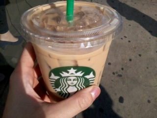
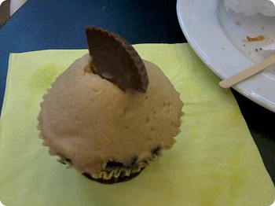
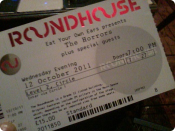
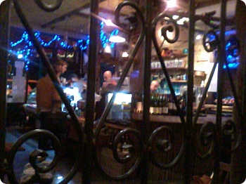
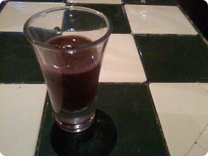
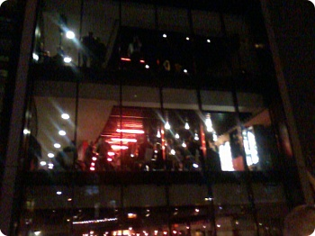
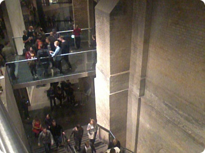
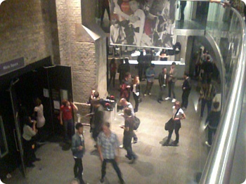
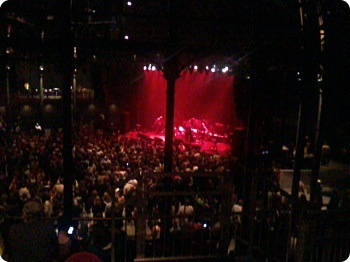

5일날 선데이로스트 먹으러갈때만해도
10월에 갑자기 여름날씨네 덥네 어쩌구했는데
이제 슬슬 월동준비를 해야할 시기가 다가왔다;;(사실늦었음;)
그래도 올해에는 나름 전기담요도 사구 히터도 작은걸로
하나 들여놨다. 내방 창문이 북쪽(.........)이라
이제 나능 곧 해를 굉장히 보기힘든 환경에 놓이게된다;; 쩝
어두울때 인나서 출근하구 퇴근할때되믄 이미 해졌구 ㅜㅜ
흑 여름에 좋다고 센트럴 싸돌아댕긴것도 이제 당분간 바이바이임.........OTL
죠 위에 사진은
점심먹구 돌아가는 길에 아이스라떼 주문
이때 현금이 없어서 데빗카드 내밀었더니
지금 카드머신 고장이라고 안된단다
그래서 그럼 ATM댕겨올테니까 잠시만요~ 이러니까
그 알바청년이(독일사람처럼 생겼는데 영어하는것도 그렇구^^;;)
기계 고장난건 우리쪽 책임이고~ 지금 이미 니꺼 라떼만들고있구
괜찮아 그냥 가져가~ 란다
얼떨결에 라떼 넙죽 받아들고 고맙다고 하고 나오긴했는데
이야~~그 알바청년 이제 막 들어온 신참같은데
(요 스타벅스는 회사바로 근처라 내가 왕 자주들리는곳^^;;;)
어디서 저런 배짱이 ㅋㅋㅋㅋ
얘네들 이런건 촘 짱임
서비스업(특히 인터넷!!!) 기본 마인드가
"안돼? 그럼 기다려~ 그래도 안돼면 하는수없고"
대충 이렇다 ㅋㅋㅋㅋㅋㅋㅋㅋㅋ
여튼 덕분에 오후타임 라떼마시믄서 즐겁게 로동 ㅋㅋㅋ

토요일
westfield 댕겨왔음 - 요게 유럽에서 젤 큰 쇼핑몰이란 소릴
누구한테 들었당
요즘 확실히 컵케키 붐은 붐인가보다
여기저기 새로운 컵케키집이 많이보인당. +_+
좋아~좋은현상이야 ㅋㅋㅋㅋㅋ
사실 주말에 약간 몸살기운있어서
약챙겨먹고 - 그 와중에도 토요일 나가놀구
일요일은 집에서 쉬면서 아 이제 괜찮네~ 약 효과 훌륭한데~
이러고있었다
그리고 잘려고 누운직후부터 갑자기 온몸이 아파와서
결국 월요일날 회사 쉬고 병원댕겨왔음 ㅡㅡ;;;;
흑 타지서 아프면 서러버 ㅡㅜ
아침에 출근할려고 지하철입구까지 갔다가
이건아니다 싶어서 하루 쉰다고 전화하고 병원직행
아침에 병원가서 진료받고 약타서 집에와서
하루죙일 끙끙앓았다 ㅡㅡ;;;;
예약없이 가서 바로 진료받을수있는
walk-in centre라는게 있다고해서 찾아갔는데
대기시간이 한시간정도 걸려서 그렇지 ㅡㅡ;;
제법 괜찮았음/ 진료비+약값해서 7.50파운드(약만오천원정도)
집에서 지하철로 두정거장+버스로 약 5분 정도 떨어진거리에 있었는데
도저히 걸을수가없어서 택시타고 왔다갔다했더니
병원비보다 택시비가 더나왔다 ㅡㅡ;;
그리고 집에돌아오는길에 운전기사아저씨
나 빤히 병원에서 나와서 오만상 찡그리고있는데도
자기딸이 니 나이또래라느니
너 여기서 공부하냐 뭐하냐~라느니 ㅡㅡ;;
쉴새없이 말을 거는거다 ㅡㅜ
게다가 운전하면서 계속 전화통화+문자질
아저씨 젭알 ㅜㅜ
이건 뭐 승질낼 기운도없어서 다 죽어가는 목소리로
네~~~~~네에에에에~~~~~요래 건성으로 대답했더니
많이 아픈가보네~그런데말이야~ 이러면서 다시수다시작
이아저씨 강적이었음 ㅋㅋㅋㅋㅋㅋㅋㅋㅋㅋ
집에 와서 1~2시간 간격으로 깨면서
하루종일 계속 잠만잤다 ㅡㅡ;;
인간이 이렇게까지 잠을 잘수가 있는건가 싶을정도로
아무것도 안먹고 잠만잤음............OTL
그리고 한 저녁8시정도 되니까 촘 살거같아서
하우스메이트에게 물이랑 과일사다달라고 땡강 ㅋㅋㅋㅋㅋㅋㅋ
덕분에 살았습니다 굽신굽신
그리고 난 저렇게 아파서 끙끙앓는 와중에도
'안돼~ 나 수요일날 호러즈 공연티켓사놨단 말이야
지금 아프면 안돼에에에에~~~!!!' ←요런걱정을 하고있었다......OTL
뭐 그래도 공연은 무사히 댕겨왔습니다 희희희희

티켓


door open은 7pm
호러즈 공연은 9:30pm라길래 근처카페로 이동
생과일주스랑 커피도 괜찮았고
안에 인테리어나 분위기가 맘에들었음 +_+
나중에 한번 더 가서 음식도 함 주문해보고싶다
위에 쪼그만 컵은 주문한 음료 기다리는동안
마셔보라면서 준건데 초코랑 바나나랑 또 뭐 섞은거라고했는데;;;
맛났음//ㅅ//




round house 첨 가봤는데
생긴지 얼마안된 건물인지 시설엄청 훈늉했다+_+
+ 공연후기 / 여행후기 만 네이버에 죽죽 올리고있는지라
오랜만에 네이버 블로그 방문했다가 누가 내 메인페이지에
이상한 카지노 도박 광고를 박고 간것을 보고 경악...........OTL
나 전에도 누가 내 블로그 불법사용??도용?? 뭐 이런거 했다고
네이버관리자 쪽에서 연락왔었는데
여...........역시 일년에 손에꼽게 사용하고 방치상태로 두는건 문제가있나? ㅜㅜ
후기올릴려구 로그인했다가 요상시련 광고배너에 깜짝놀라서
스킨바꾸고 어쩌구 삽질하다가 시간다보냈다;;;
오늘은 이만 취침^^;;;;